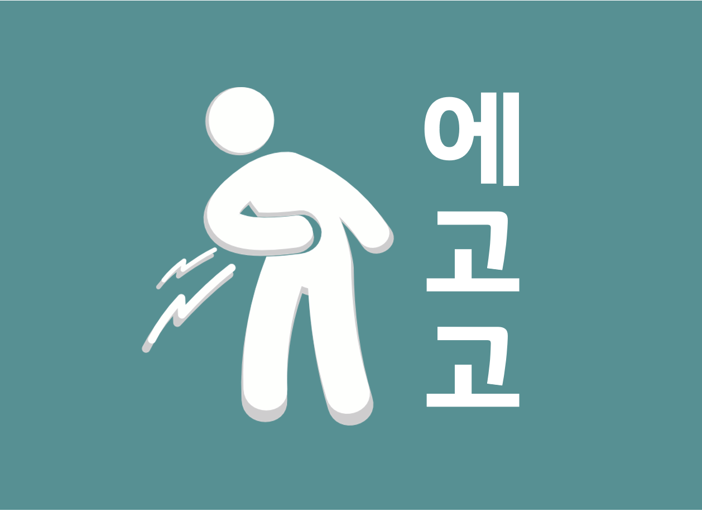
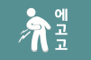
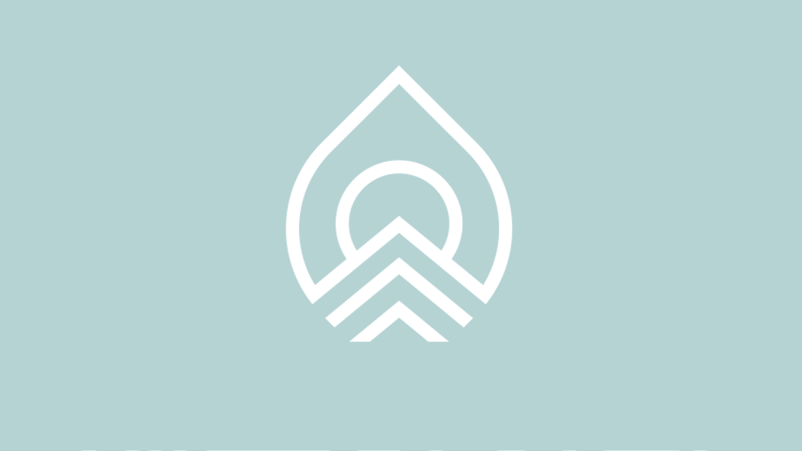
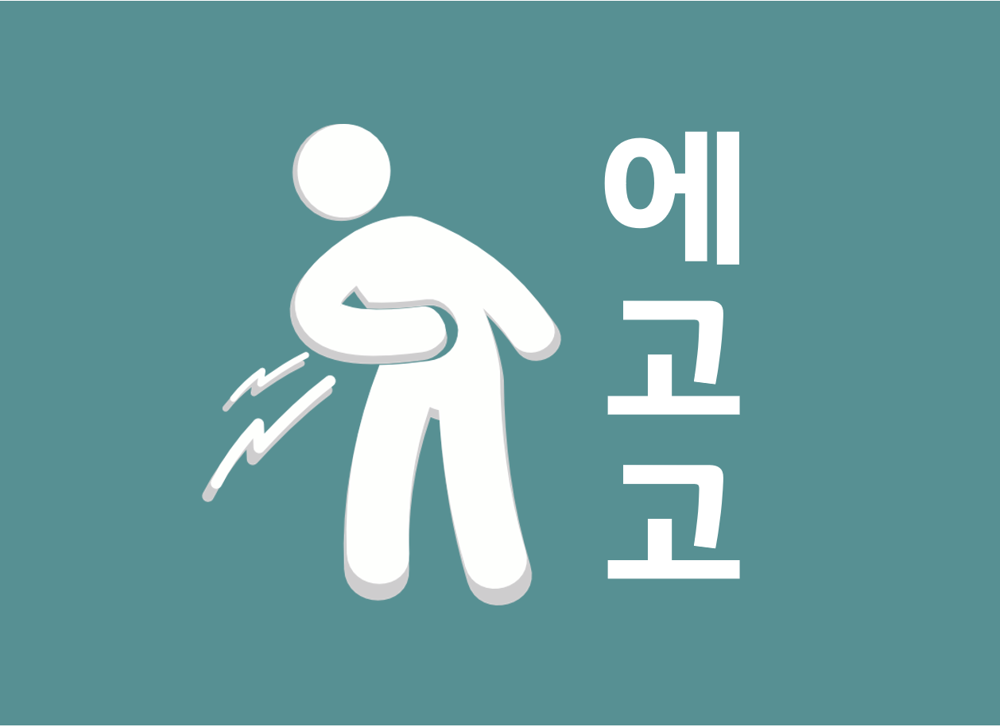
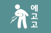
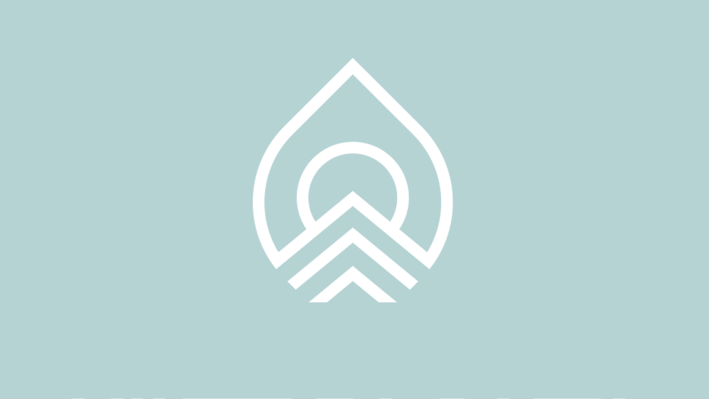

통증 질환
 

-
통증클리닉
이놈의 통증을 어떻게 하지?
-
갑자기 찾아온 통증도
-
지긋지긋 오래된 통증도
통증, 좋아질 수 있습니다!
정확한 진단과 꼼꼼한 치료
그리고 믿음직한 의료진과 함께라면
당신도 좋아지실거에요!
어깨·목 통증
일자목거북목/목디스크/오십견/어깨충돌증후군
- 1어깨가 항상 뻐근하고 무거워요.
- 2자고 일어나니 목이 안돌아가요.
- 3뒷목·등·날개뼈가 아프고 담이 결려요.
- 4밤에 어깨가 아파서 잠을 못 자요.
- 5손을 들고 싶은데 어깨가 안 올라가요.
- 6손·팔이 저려요.
팔꿈치·손·손목통증
테니스엘보/골프엘보/손목인대손상/손목건초염/손목터널증후군/손가락관절염
- 1팔꿈치·손목 관절이 아프고 욱신거려요.
- 2손목·손가락이 붓고 아파요.
- 3글씨 쓰거나 키보드를 칠 때 손목이 아파요.
- 4물건을 들거나 일할 때 팔꿈치가 아파요.
허리·골반통증
허리협착증/허리디스크/좌골신경통
- 1허리를 삐끗해서 움직일 수가 없어요.
- 2허리·엉치로 뻐근하고 무거워요.
- 3엉덩이·다리·발까지 저려요.
- 4척추·골반이 틀어졌대요.
- 5허리가 아파서 오래 걸을 수가 없어요.
다리·발·발목 통증
무릎관절염/퇴행성관절염/종아리근육통/발목인대손상/발목염좌/족저근막염
- 1다리가 무겁고 뻐근해요.
- 2무릎이 아프고 물이 차요.
- 3허벅지·종아리가 땅기고 아파요.
- 4오래 서있으면 다리가 잘 부어요.
- 5종아리에 쥐가 잘 나요.
- 6발목을 삐끗했어요. 삐는 곳만 항상 삐어요
- 7발바닥이 아파요. 아침에 발을 못 딛겠어요.
해움한의원의 치료가 특별한 이유
근육과 뼈의 정렬부터
혹시모를 숨겨진 내과적 원인까지,
당신이 가진 통증을
다각적으로 파헤쳐드려요!
- 1침·부항으로 통증을 다스리고 근육을 조절
- 2약침으로 염증을 줄이고 조직을 재생
- 3추나로 뼈와 척추 바로잡기
- 4한약으로 근본해결, 힘줄·인대를 튼튼하게
- 5올바른 자세와 운동 코칭으로 재발방지
더 자세히 알아보고 싶다면?
목동일자목 목동역일자목 신정역일자목 신정네거리역일자목 양천구일자목 신월동일자목 오목교일자목 오목교역일자목 까치산일자목 까치산역일자목 화곡역일자목 화곡동일자목 발산역일자목 우장산일자목 우장산역일자목 가양역일자목 등촌역일자목 염창역일자목 김포일자목 마곡일자목 마곡역일자목 발산일자목 발산역일자목 마곡나루역일자목 마곡나루일자목 양천향교역일자목 증미역일자목 선유도역일자목 마포구일자목 일산일자목 홍대일자목 합정일자목 홍대역일자목 합정역일자목 서교동일자목 이대역일자목 서울일자목 목동거북목 목동역거북목 신정역거북목 신정네거리역거북목 양천구거북목 신월동거북목 오목교거북목 오목교역거북목 까치산거북목 까치산역거북목 화곡역거북목 화곡동거북목 발산역거북목 우장산거북목 우장산역거북목 가양역거북목 등촌역거북목 염창역거북목 김포거북목 마곡거북목 마곡역거북목 발산거북목 발산역거북목 마곡나루역거북목 마곡나루거북목 양천향교역거북목 증미역거북목 선유도역거북목 마포구거북목 일산거북목 홍대거북목 합정거북목 홍대역거북목 합정역거북목 서교동거북목 이대역거북목 서울거북목 목동목디스크 목동역목디스크 신정역목디스크 신정네거리역목디스크 양천구목디스크 신월동목디스크 오목교목디스크 오목교역목디스크 까치산목디스크 까치산역목디스크 화곡역목디스크 화곡동목디스크 발산역목디스크 우장산목디스크 우장산역목디스크 가양역목디스크 등촌역목디스크 염창역목디스크 김포목디스크 마곡목디스크 마곡역목디스크 발산목디스크 발산역목디스크 마곡나루역목디스크 마곡나루목디스크 양천향교역목디스크 증미역목디스크 선유도역목디스크 마포구목디스크 일산목디스크 홍대목디스크 합정목디스크 홍대역목디스크 합정역목디스크 서교동목디스크 이대역목디스크 서울목디스크 목동허리디스크 목동역허리디스크 신정역허리디스크 신정네거리역허리디스크 양천구허리디스크 신월동허리디스크 오목교허리디스크 오목교역허리디스크 까치산허리디스크 까치산역허리디스크 화곡역허리디스크 화곡동허리디스크 발산역허리디스크 우장산허리디스크 우장산역허리디스크 가양역허리디스크 등촌역허리디스크 염창역허리디스크 김포허리디스크 마곡허리디스크 마곡역허리디스크 발산허리디스크 발산역허리디스크 마곡나루역허리디스크 마곡나루허리디스크 양천향교역허리디스크 증미역허리디스크 선유도역허리디스크 마포구허리디스크 일산허리디스크 홍대허리디스크 합정허리디스크 홍대역허리디스크 합정역허리디스크 서교동허리디스크 이대역허리디스크 서울허리디스크 목동오십견 목동역오십견 신정역오십견 신정네거리역오십견 양천구오십견 신월동오십견 오목교오십견 오목교역오십견 까치산오십견 까치산역오십견 화곡역오십견 화곡동오십견 발산역오십견 우장산오십견 우장산역오십견 가양역오십견 등촌역오십견 염창역오십견 김포오십견 마곡오십견 마곡역오십견 발산오십견 발산역오십견 마곡나루역오십견 마곡나루오십견 양천향교역오십견 증미역오십견 선유도역오십견 마포구오십견 일산오십견 홍대오십견 합정오십견 홍대역오십견 합정역오십견 서교동오십견 이대역오십견 서울오십견
목동무릎관절염 목동역무릎관절염 신정역무릎관절염 신정네거리역무릎관절염 양천구무릎관절염 신월동무릎관절염 오목교무릎관절염 오목교역무릎관절염 까치산무릎관절염 까치산역무릎관절염 화곡역무릎관절염 화곡동무릎관절염 발산역무릎관절염 우장산무릎관절염 우장산역무릎관절염 가양역무릎관절염 등촌역무릎관절염 염창역무릎관절염 김포무릎관절염 마곡무릎관절염 마곡역무릎관절염 발산무릎관절염 발산역무릎관절염 마곡나루역무릎관절염 마곡나루무릎관절염 양천향교역무릎관절염 증미역무릎관절염 선유도역무릎관절염 마포구무릎관절염 일산무릎관절염 홍대무릎관절염 합정무릎관절염 홍대역무릎관절염 합정역무릎관절염 서교동무릎관절염 이대역무릎관절염 서울무릎관절염 목동퇴행성관절염 목동역퇴행성관절염 신정역퇴행성관절염 신정네거리역퇴행성관절염 양천구퇴행성관절염 신월동퇴행성관절염 오목교퇴행성관절염 오목교역퇴행성관절염 까치산퇴행성관절염 까치산역퇴행성관절염 화곡역퇴행성관절염 화곡동퇴행성관절염 발산역퇴행성관절염 우장산퇴행성관절염 우장산역퇴행성관절염 가양역퇴행성관절염 등촌역퇴행성관절염 염창역퇴행성관절염 김포퇴행성관절염 마곡퇴행성관절염 마곡역퇴행성관절염 발산퇴행성관절염 발산역퇴행성관절염 마곡나루역퇴행성관절염 마곡나루퇴행성관절염 양천향교역퇴행성관절염 증미역퇴행성관절염 선유도역퇴행성관절염 마포구퇴행성관절염 일산퇴행성관절염 홍대퇴행성관절염 합정퇴행성관절염 홍대역퇴행성관절염 합정역퇴행성관절염 서교동퇴행성관절염 이대역퇴행성관절염 서울퇴행성관절염 목동근육통 목동역근육통 신정역근육통 신정네거리역근육통 양천구근육통 신월동근육통 오목교근육통 오목교역근육통 까치산근육통 까치산역근육통 화곡역근육통 화곡동근육통 발산역근육통 우장산근육통 우장산역근육통 가양역근육통 등촌역근육통 염창역근육통 김포근육통 마곡근육통 마곡역근육통 발산근육통 발산역근육통 마곡나루역근육통 마곡나루근육통 양천향교역근육통 증미역근육통 선유도역근육통 마포구근육통 일산근육통 홍대근육통 합정근육통 홍대역근육통 합정역근육통 서교동근육통 이대역근육통 서울근육통 목동발목인대치료 목동역발목인대치료 신정역발목인대치료 신정네거리역발목인대치료 양천구발목인대치료 신월동발목인대치료 오목교발목인대치료 오목교역발목인대치료 까치산발목인대치료 까치산역발목인대치료 화곡역발목인대치료 화곡동발목인대치료 발산역발목인대치료 우장산발목인대치료 우장산역발목인대치료 가양역발목인대치료 등촌역발목인대치료 염창역발목인대치료 김포발목인대치료 마곡발목인대치료 마곡역발목인대치료 발산발목인대치료 발산역발목인대치료 마곡나루역발목인대치료 마곡나루발목인대치료 양천향교역발목인대치료 증미역발목인대치료 선유도역발목인대치료 마포구발목인대치료 일산발목인대치료 홍대발목인대치료 합정발목인대치료 홍대역발목인대치료 합정역발목인대치료 서교동발목인대치료 이대역발목인대치료 서울발목인대치료 목동발목염좌 목동역발목염좌 신정역발목염좌 신정네거리역발목염좌 양천구발목염좌 신월동발목염좌 오목교발목염좌 오목교역발목염좌 까치산발목염좌 까치산역발목염좌 화곡역발목염좌 화곡동발목염좌 발산역발목염좌 우장산발목염좌 우장산역발목염좌 가양역발목염좌 등촌역발목염좌 염창역발목염좌 김포발목염좌 마곡발목염좌 마곡역발목염좌 발산발목염좌 발산역발목염좌 마곡나루역발목염좌 마곡나루발목염좌 양천향교역발목염좌 증미역발목염좌 선유도역발목염좌 마포구발목염좌 일산발목염좌 홍대발목염좌 합정발목염좌 홍대역발목염좌 합정역발목염좌 서교동발목염좌 이대역발목염좌 서울발목염좌 목동족저근막염 목동역족저근막염 신정역족저근막염 신정네거리역족저근막염 양천구족저근막염 신월동족저근막염 오목교족저근막염 오목교역족저근막염 까치산족저근막염 까치산역족저근막염 화곡역족저근막염 화곡동족저근막염 발산역족저근막염 우장산족저근막염 우장산역족저근막염 가양역족저근막염 등촌역족저근막염 염창역족저근막염 김포족저근막염 마곡족저근막염 마곡역족저근막염 발산족저근막염 발산역족저근막염 마곡나루역족저근막염 마곡나루족저근막염 양천향교역족저근막염 증미역족저근막염 선유도역족저근막염 마포구족저근막염 일산족저근막염 홍대족저근막염 합정족저근막염 홍대역족저근막염 합정역족저근막염 서교동족저근막염 이대역족저근막염 서울족저근막염
목동손목터널증후군 목동역손목터널증후군 신정역손목터널증후군 신정네거리역손목터널증후군 양천구손목터널증후군 신월동손목터널증후군 오목교손목터널증후군 오목교역손목터널증후군 까치산손목터널증후군 까치산역손목터널증후군 화곡역손목터널증후군 화곡동손목터널증후군 발산역손목터널증후군 우장산손목터널증후군 우장산역손목터널증후군 가양역손목터널증후군 등촌역손목터널증후군 염창역손목터널증후군 김포손목터널증후군 마곡손목터널증후군 마곡역손목터널증후군 발산손목터널증후군 발산역손목터널증후군 마곡나루역손목터널증후군 마곡나루손목터널증후군 양천향교역손목터널증후군 증미역손목터널증후군 선유도역손목터널증후군 마포구손목터널증후군 일산손목터널증후군 홍대손목터널증후군 합정손목터널증후군 홍대역손목터널증후군 합정역손목터널증후군 서교동손목터널증후군 이대역손목터널증후군 서울손목터널증후군 목동손가락관절염 목동역손가락관절염 신정역손가락관절염 신정네거리역손가락관절염 양천구손가락관절염 신월동손가락관절염 오목교손가락관절염 오목교역손가락관절염 까치산손가락관절염 까치산역손가락관절염 화곡역손가락관절염 화곡동손가락관절염 발산역손가락관절염 우장산손가락관절염 우장산역손가락관절염 가양역손가락관절염 등촌역손가락관절염 염창역손가락관절염 김포손가락관절염 마곡손가락관절염 마곡역손가락관절염 발산손가락관절염 발산역손가락관절염 마곡나루역손가락관절염 마곡나루손가락관절염 양천향교역손가락관절염 증미역손가락관절염 선유도역손가락관절염 마포구손가락관절염 일산손가락관절염 홍대손가락관절염 합정손가락관절염 홍대역손가락관절염 합정역손가락관절염 서교동손가락관절염 이대역손가락관절염 서울손가락관절염 목동척추협착증 목동역척추협착증 신정역척추협착증 신정네거리역척추협착증 양천구척추협착증 신월동척추협착증 오목교척추협착증 오목교역척추협착증 까치산척추협착증 까치산역척추협착증 화곡역척추협착증 화곡동척추협착증 발산역척추협착증 우장산척추협착증 우장산역척추협착증 가양역척추협착증 등촌역척추협착증 염창역척추협착증 김포척추협착증 마곡척추협착증 마곡역척추협착증 발산척추협착증 발산역척추협착증 마곡나루역척추협착증 마곡나루척추협착증 양천향교역척추협착증 증미역척추협착증 선유도역척추협착증 마포구척추협착증 일산척추협착증 홍대척추협착증 합정척추협착증 홍대역척추협착증 합정역척추협착증 서교동척추협착증 이대역척추협착증 서울척추협착증 목동좌골신경통 목동역좌골신경통 신정역좌골신경통 신정네거리역좌골신경통 양천구좌골신경통 신월동좌골신경통 오목교좌골신경통 오목교역좌골신경통 까치산좌골신경통 까치산역좌골신경통 화곡역좌골신경통 화곡동좌골신경통 발산역좌골신경통 우장산좌골신경통 우장산역좌골신경통 가양역좌골신경통 등촌역좌골신경통 염창역좌골신경통 김포좌골신경통 마곡좌골신경통 마곡역좌골신경통 발산좌골신경통 발산역좌골신경통 마곡나루역좌골신경통 마곡나루좌골신경통 양천향교역좌골신경통 증미역좌골신경통 선유도역좌골신경통 마포구좌골신경통 일산좌골신경통 홍대좌골신경통 합정좌골신경통 홍대역좌골신경통 합정역좌골신경통 서교동좌골신경통 이대역좌골신경통 서울좌골신경통
목동어깨충돌증후군 목동역어깨충돌증후군 신정역어깨충돌증후군 신정네거리역어깨충돌증후군 양천구어깨충돌증후군 신월동어깨충돌증후군 오목교어깨충돌증후군 오목교역어깨충돌증후군 까치산어깨충돌증후군 까치산역어깨충돌증후군 화곡역어깨충돌증후군 화곡동어깨충돌증후군 발산역어깨충돌증후군 우장산어깨충돌증후군 우장산역어깨충돌증후군 가양역어깨충돌증후군 등촌역어깨충돌증후군 염창역어깨충돌증후군 김포어깨충돌증후군 마곡어깨충돌증후군 마곡역어깨충돌증후군 발산어깨충돌증후군 발산역어깨충돌증후군 마곡나루역어깨충돌증후군 마곡나루어깨충돌증후군 양천향교역어깨충돌증후군 증미역어깨충돌증후군 선유도역어깨충돌증후군 마포구어깨충돌증후군 일산어깨충돌증후군 홍대어깨충돌증후군 합정어깨충돌증후군 홍대역어깨충돌증후군 합정역어깨충돌증후군 서교동어깨충돌증후군 이대역어깨충돌증후군 서울어깨충돌증후군 목동테니스엘보 목동역테니스엘보 신정역테니스엘보 신정네거리역테니스엘보 양천구테니스엘보 신월동테니스엘보 오목교테니스엘보 오목교역테니스엘보 까치산테니스엘보 까치산역테니스엘보 화곡역테니스엘보 화곡동테니스엘보 발산역테니스엘보 우장산테니스엘보 우장산역테니스엘보 가양역테니스엘보 등촌역테니스엘보 염창역테니스엘보 김포테니스엘보 마곡테니스엘보 마곡역테니스엘보 발산테니스엘보 발산역테니스엘보 마곡나루역테니스엘보 마곡나루테니스엘보 양천향교역테니스엘보 증미역테니스엘보 선유도역테니스엘보 마포구테니스엘보 일산테니스엘보 홍대테니스엘보 합정테니스엘보 홍대역테니스엘보 합정역테니스엘보 서교동테니스엘보 이대역테니스엘보 서울테니스엘보 목동골프엘보 목동역골프엘보 신정역골프엘보 신정네거리역골프엘보 양천구골프엘보 신월동골프엘보 오목교골프엘보 오목교역골프엘보 까치산골프엘보 까치산역골프엘보 화곡역골프엘보 화곡동골프엘보 발산역골프엘보 우장산골프엘보 우장산역골프엘보 가양역골프엘보 등촌역골프엘보 염창역골프엘보 김포골프엘보 마곡골프엘보 마곡역골프엘보 발산골프엘보 발산역골프엘보 마곡나루역골프엘보 마곡나루골프엘보 양천향교역골프엘보 증미역골프엘보 선유도역골프엘보 마포구골프엘보 일산골프엘보 홍대골프엘보 합정골프엘보 홍대역골프엘보 합정역골프엘보 서교동골프엘보 이대역골프엘보 서울골프엘보 목동손목인대치료 목동역손목인대치료 신정역손목인대치료 신정네거리역손목인대치료 양천구손목인대치료 신월동손목인대치료 오목교손목인대치료 오목교역손목인대치료 까치산손목인대치료 까치산역손목인대치료 화곡역손목인대치료 화곡동손목인대치료 발산역손목인대치료 우장산손목인대치료 우장산역손목인대치료 가양역손목인대치료 등촌역손목인대치료 염창역손목인대치료 김포손목인대치료 마곡손목인대치료 마곡역손목인대치료 발산손목인대치료 발산역손목인대치료 마곡나루역손목인대치료 마곡나루손목인대치료 양천향교역손목인대치료 증미역손목인대치료 선유도역손목인대치료 마포구손목인대치료 일산손목인대치료 홍대손목인대치료 합정손목인대치료 홍대역손목인대치료 합정역손목인대치료 서교동손목인대치료 이대역손목인대치료 서울손목인대치료 목동손목건조염 목동역손목건조염 신정역손목건조염 신정네거리역손목건조염 양천구손목건조염 신월동손목건조염 오목교손목건조염 오목교역손목건조염 까치산손목건조염 까치산역손목건조염 화곡역손목건조염 화곡동손목건조염 발산역손목건조염 우장산손목건조염 우장산역손목건조염 가양역손목건조염 등촌역손목건조염 염창역손목건조염 김포손목건조염 마곡손목건조염 마곡역손목건조염 발산손목건조염 발산역손목건조염 마곡나루역손목건조염 마곡나루손목건조염 양천향교역손목건조염 증미역손목건조염 선유도역손목건조염 마포구손목건조염 일산손목건조염 홍대손목건조염 합정손목건조염 홍대역손목건조염 합정역손목건조염 서교동손목건조염 이대역손목건조염 서울손목건조염